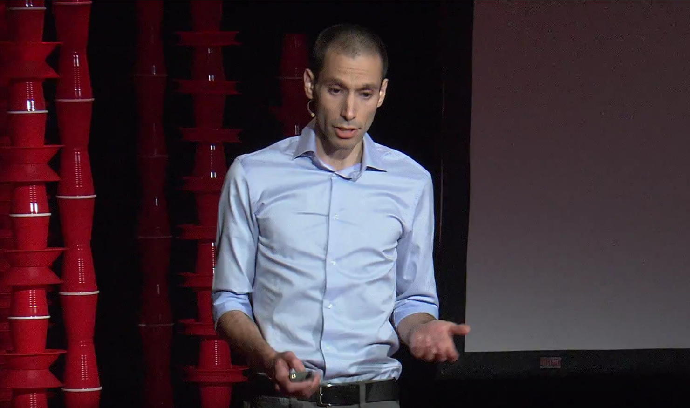

Efficient lensless imaging with a femto-pixel
Lensless Imaging with Compressive Ultrafast Sensing
Guy Satat, Matthew Tancik, Ramesh Raskar
A time-of-flight based lensless compressive imaging technique that captures scene reflectance with significantly less compressive patterns compared to previous works.
Traditional cameras require a lens and a mega-pixel sensor to capture images. The lens focuses light from the scene onto the sensor. We demonstrate a new imaging method that is lensless and requires only a single pixel for imaging. Compared to previous single pixel cameras our system allows significantly faster and more efficient acquisition. This is achieved by using ultrafast time-resolved measurement with compressive sensing. The time-resolved sensing adds information to the measurement, thus fewer measurements are needed and the acquisition is faster. Lensless and single pixel imaging computationally resolves major constraints in imaging systems design. Notable applications include imaging in challenging parts of the spectrum (like infrared and THz), and in challenging environments where using a lens is problematic.
Featured on MIT News.
Overview:
The suggested imaging framework is introduced below:
The scene is illuminated with a pulse of light that is modulated with a mask. The light that is reflected from the scene is measured by a single (or a few) sensors. The sensors are time sensitive so each sensor produces a time series. Regular single pixel cameras don't use time-resolved measurements, and requires many masks to recover the scene. This is demonstrated by the animation above; on the left we see the acquisition time of a regular single pixel camera, and on the right we demonstrate three different configurations of time-resolved single pixel camera which operate significantly faster (requires 50x fewer masks).
Ultrafast measurement:
Since the pixel is time sensitive, light that is reflected from scene points close to the detector will arrive earlier compared to further points (as demonstrated in the animation below). This time-resolved information helps the reconstruction algorithm and as a result less compressive patterns are needed.
Space-time connection. A time-resolved single pixel measures events from sources in different positions at different times.
Where to place the detector?
We can use a single pixel or two or more pixels with this method to provide even more information. It is important, however, to place them in the ideal location. In the paper we suggest an algorithm that maximizes the information from the detectors by placing them as far as possible from one another.
Optimizing the compressive sensing patterns
The last part of the framework are the compressive patterns. These patterns are used to compress information from the scene while taking the measurements. Traditionally the patterns are sampled from random distributions. However, in our case we can do better than random patterns by using the physics of the ultrafast measurement. In the paper we describe a methodology for optimizing the patterns so that fewer patterns are needed in order to achieve specific reconstruction quality.
Here are some results with a different number of sensors (K = 1 or 2 sensors) and time resolutions (T = 20 or 100 picosecond) with M = 50 patterns. We compare our approach to a regular single pixel camera with M = 50 or 2500 patterns.
Paper Citation:
• G. Satat, M. Tancik and R. Raskar, "Lensless Imaging with Compressive Ultrafast Sensing", IEEE Trans. Computational Imaging vol. 3, 398-407 (2017).
• doi: 10.1109/TCI.2017.2684624.
• Local copy
Related Works:
Our work is inspired by the single pixel camera, compressive sensing and time-resolved sensing. Compared to traditional single pixel cameras we use a time-resolved sensor - so that each detector readout is a vector encoding the spatial content of the scene (instead of a scalar in the traditional case). This time-resolved sensing is leveraged by a physics-based model of lensless imaging, and thus significantly reduce the number of required measurements. Time-resolved sensing has been suggested for lensless imaging, but without compressive sensing. Because we use compressive sensing, our approach works with only a single pixel. We also present tradeoffs and design criteria for a time-resolved measurement with compressive sensing in the context of lensless imaging. Many works addressed the problems of LIDAR (recover of scene geometry) with compressive sensing. Our work on the other hand aims to recover the scene reflectance. We envision combining recovery of scene geometry and reflectance with compressive ultra-fast sensing.
Media Coverage:
• MIT News
• Optics.org
• Yahoo Digital Trends
• Imaging Resource
• Photonics.com
• Semiconductor Engineering
• India Times
• Elektor
• University Herald
• Observer 24/7
• Extreme Tech
FAQ:
What is compressive sensing?
Compressive sensing is a method that enables recovery of signal (or image, in our case) from a few measurements. During the acquisition process, the measurements compress information about the target signal. The signal is recovered with a computational reconstruction algorithm.
What is the single pixel camera?
The single pixel camera uses a single pixel that is measured multiple times. In each measurement the pixel sees the scene modulated with a different pattern (see next question). If the patterns are chosen correctly the number of required measurements is less than the number of scene pixels. These measurements are used to computationally reconstruct the original scene.
What do you mean by compressive patterns?
The measurement process with compressive sensing requires coding each measurement with a masks (or pattern). We call these masks compressive patterns.
How is this work different from "regular" single pixel camera? How exactly does the time-resolved measurement help?
The traditional approaches for single pixel cameras use a regular pixel (bucket detector) that simply collects light. Each compressive measurement is simply a single number (scalar). We suggest using a time-resolved pixel, such that each pixel measurement produces a vector that contains information in time. This can shorten the overall acquisition process.
What are the potential applications?
The single pixel camera concept essentially breaks the definition of a traditional camera. Specifically, a lens is no longer necessary and there is no need for a tight array of pixels. This can be useful for imaging in parts of the electromagnetic spectrum where it's hard to create sensors or lenses (like infrared or THz). This can also be useful in challenging imaging environments where it's impossible to use a lens.
What are the main advantages of this method?
1) It provides a design framework for lensless imaging. The original single pixel camera is just one design point. The framework allows the user to trade off parameters such as acquisition time, cost etc.
2) The introduction of time-resolved pixels to the single pixel framework enables shorter acquisition times. For example, in the paper we demonstrate one design point that requires 50x fewer compressive patterns (shorter acquisition time). This is demonstrated in the animation above.
3) With a time-resolved pixel we demonstrate a technique to optimize the compressive patterns and further reduce the acquisition time.
What are some devices that enable time-resolved measurement?
There are many optional devices like single photon avalanche diode (SPAD), SPAD array and streak camera.
What are some of the limitations?
Using a time-resolved sensor requires a pulsed laser source for illumination. As mentioned above, this is simply an alternative design point that is more expensive. However it allows significantly shorter acquisition time.
Camera Culture Related Works :
• G. Satat, B. Heshmat, D. Raviv and R. Raskar, “All Photons Imaging Through Volumetric Scattering”, Nature Scientific Reports, Vol. 6, 33946, (2016).
• A. R. Sanchez, B. Heshmat, A. Aghasi, M. Zhang, S. Naqvi, J. Romberg, R. Raskar, “Terahertz time-gated spectroscopic imaging for content extraction through layered structures,” Nature Communications, Vol. 7, 12665, (2016).
• B. Heshmat, I. H. Lee, R. Raskar, "Optical brush: Imaging through permuted probes," Nature Scientific Reports, Vol. 6, 20217, (2016).
• G. Satat, B. Heshmat, N. Naik, A. R. Sanchez and R. Raskar, "Advances in ultrafast optics and imaging applications," in SPIE 2016 (invited).
• G. Satat, B. Heshmat, C. Barsi, D. Raviv, O. Chen, M.G. Bawendi and R. Raskar, “Locating and Classifying Fluorescent Tags Behind Turbid Layers Non-Invasively Using Sparsity-Based Time-Resolved Inversion,” Nature Communications, Vol. 6, 6796 (2015).
• G. Gariepy, et al., "Single-photon sensitive light-in-fight imaging," Nature Communications, Vol. 6, 6021 (2015).
• B. Heshmat, G. Satat, C. Barsi, and R. Raskar, "Single-Shot Ultrafast Imaging Using Parallax-Free Alignment with a Tilted Lenslet Array," in CLEO: 2014 (oral).
• A. Velten, et al., "Recovering three-dimensional shape around a corner using ultrafast time-of-flight imaging," Nature communications, Vol. 3, 745 (2012).
• A. Velten, et al., "Slow art with a trillion frames per second camera," ACM SIGGRAPH 2011 Talks ACM, (2011).
• R. Raskar, and D. James, "5d time-light transport matrix: What can we reason about scene properties," Int. Memo 7 (2008).
• N. Naik, et al., "Single view reflectance capture using multiplexed scattering and time-of-flight imaging," ACM Transactions on Graphics (ToG), Vol. 30. No. 6. ACM, (2011).
Related Talks:
| X-ray vision without X-rays | The future of imaging | Imaging at trillion frames per second |
|  |